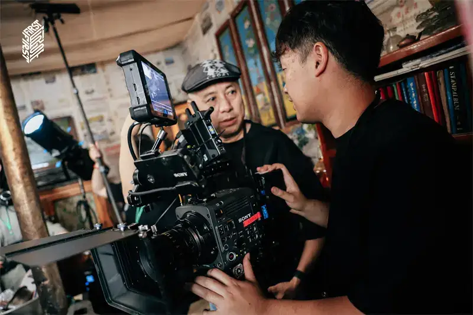
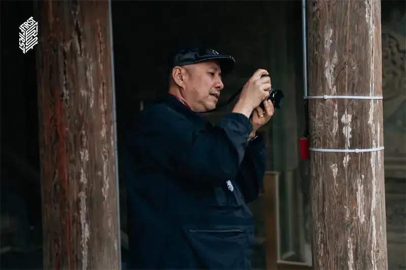
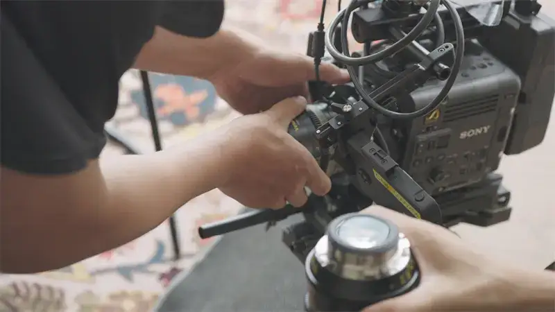

In an age where visual art keeps changing, Sony cinema cameras are a strong partner for creators who explore the world of light. They are light in the hand, powerful in function, and superb in image quality. Sony cinema cameras let creators work freely, whether in vast natural scenery or on city streets full of daily life, and they build the plan with the creator.
Wang Yu won the Best Cinematography award at the 36th Golden Rooster Awards. He is the director of photography for the 'Creation of the Gods' trilogy. He is praised in the field for his unique point of view and his deep understanding of light. His career spans nearly 30 years. He has worked with famous directors such as Tian Zhuangzhuang, Jia Zhangke, Lou Ye, and Zhang Yibai. Mr. Wang used Sony cinema cameras to shoot films earlier. Now, with the progress of technology, the products have made great technical advances. Sony was pleased to invite Mr. Wang for an in-depth interview to talk about what Sony cinema cameras mean for creators.
The well-known director of photography, Mr. Wang Yu
As a mentor and advisor for the 18th FIRST Training Camp, Mr. Wang said the camp used Sony's flagship CineAlta cinema cameras, the CineAltaV2 and CineAltaB, the Cinema Line FX series, and G Master lenses. These products are light and produce high-quality images. They helped many young filmmakers a lot in their early work. He believes Sony's technical support and spirit of innovation give creators more ways to create.

The well-known director of photography Wang Yu guides the training camp team on set, shooting with a Sony cinema camera.
At the same time, Mr. Wang shared his experience. He often uses Sony's small cameras when he shoots ads and short films. After tests on an ultra-cinema large screen and in a professional color-grading room, he believes Sony cinema cameras such as the FX3 are now, in dynamic range, image quality, and color, very close to the level of large cameras. They are well suited for ad directors who create and shoot.

Mr. Wang uses a cinema camera at the FIRST Training Camp.
'Sony cameras let me create freely, without limits.' That is the high praise Mr. Wang gave Sony cinema cameras. Sony earned this praise because practice has shown that its flagship CineAlta cameras, the CineAltaV2 and CineAltaB, and the Cinema Line FX series, all handle the extreme challenges of filmmaking well. These include extreme colors, extreme environments, and unexpected events. Take the CineAltaB. Mr. Wang shared his experience: "With the CineAltaB, I feel it is very good. It delivers very clear 8.6K images, and it is easy to hold in hand. It also gives me the follow-focus shooting that feels like recording."

Sony cinema cameras help creators work freely on set.
Mr. Wang also praised the image stabilization, the dual-card-slot design, and the auto focus tracking of the CineAltaB. He said: "These features are already very close to what I expect. The image quality is very good, and it can record RAW (X-OCN) format internally. With the dual native ISO (ISO800/3200), I am full of confidence in the future of the CineAltaB." He looked back on his history with Sony cinema cameras, from the early F900 to the F35. He has seen the growth and progress of Sony's camera technology. He firmly believes the CineAltaB will become the choice of many cinematographers in the future.

With its superb performance and innovative design, Sony cinema cameras have won the recognition of Mr. Wang Yu and many professional photographers in the field. As technology keeps improving, Sony will keep giving creators more high-quality gear. It uses technology to spark ideas and faithfully recreate the creator's intent.
About the Sony Cinema Camera System

The Sony Cinema Camera System
Sony keeps using innovative technology to faithfully recreate the creator's intent. With broad experience in film and TV production, Sony offers a rich and efficient creative shooting system to meet the many needs of high-quality filmmaking. The Sony cinema camera system centers on the CineAlta series. It includes the digital cinema cameras widely praised in the industry: the CineAltaV, the CineAltaV 2, and the CineAltaB. It also includes the full-frame cinema camera FX9, popular in documentary and TV drama work; the full-frame PTZ camera FR7; the FX6 for flexible work; the light and portable FX3; and the FX30, a young person's first cinema camera. The CineAltaB is made for diverse film and TV work. It broadens the Sony cinema camera system and gives film and TV creation more room to imagine. Sony also offers Crystal LED screens, which give high contrast and rich color, and a virtual production tool set. These improve the production flow and help film and TV creators work with more freedom.